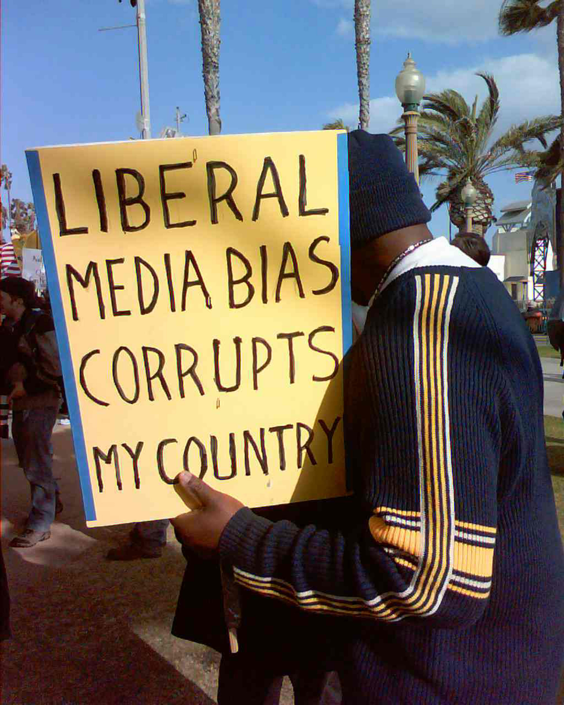

Important debates over media theory have questioned the foundations and hence the results of media research. Within academia, theories and research can represent an individual’s lifework and livelihood. As a result, issues of tenure and position, rather than issues of truth and objectivity, can sometimes fuel discussion over theories and research.
Although the use of advanced methodologies can resolve many of the questions raised about various theories, the fact remains that the use of these theories in public debate generally follows a broader understanding. For example, if a hypothetical study found that convicted violent offenders had aggressive feelings after playing the video game Mortal Kombat, many would take this as proof that video games cause violent acts without considering other possible explanations. Often, the nuances of these studies are lost when they enter the public arena.
A significant division among media studies theorists is the belief that audiences are passive or active. A passive audienceThe assumption that audiences passively accept the messages that media give them., in the most extreme statement of this position, passively accepts the messages that media send it. An active audienceThe assumption that audiences make informed, rational decisions about media consumption., on the other hand, is fully aware of media messages and makes informed decisions about how to process and interact with media. Newer trends in media studies have attempted to develop a more complex view of media audiences than the active versus passive debate affords, but in the public sphere, this opposition frames many of the debates about media influence.Robert Heath and Jennings Bryant, Human Communication Theory and Research: Concepts, Contexts, and Challenges (Mahwah, NJ: Lawrence Erlbaum Associates, 2000), 385–386.
A number of criticisms have dogged agenda-setting theory. Chief among these is that agenda-setting studies are unable to prove cause and effect; essentially, no one has truly shown that the media agenda sets the public agenda and not the other way around. An agenda-setting study could connect the prevalence of a topic in the media with later changes in public policy and may conclude that the media set this agenda. However, policy makers and lobbyists often conduct public relations efforts to encourage the creation of certain policies. In addition, public concern over issues generates media coverage as well, making it difficult to tell if the media are responding to public desire for coverage of an issue or if they are pushing an issue on their own agenda.Kwamena Kwansah-Aidoo, “Prospects for Agenda-Setting Research in the 21st Century,” in Topical Issues in Communications and Media Research, ed. Kwamena Kwansah-Aidoo (New York: Nova Science Publishers, 2005), 40–41.
The general presuppositions of the uses and gratifications theory have drawn criticism. By assuming that media fulfill a functional purpose in an individual’s life, the uses and gratifications theory implicitly justifies and reaffirms the functional place of media in the public sphere; critics say that people do not always use media to fulfill a function. They ask whether unconscious motivations or social rituals might be at play. Furthermore, because it focuses on personal, psychological aspects of media, the theory cannot question whether media are artificially imposed on an indivdual. Studies involving the uses and gratifications theory are often sound methodologically, but the overall assumptions of the studies are left unquestioned.Lawrence Grossberg and others, Mediamaking: Mass Media in a Popular Culture (Thousand Oaks, CA: Sage, 2006), 266–267.
Although many regard the spiral of silence theory as useful when applying its broadest principles, it is weak when dealing with specifics. For example, the phenomenon of the spiral of silence is most visible in individuals who are fearful of social isolation. Those who are less fearful are less likely to be silent if public opinion turns against them. Nonconformists contradict the claims of the spiral of silence theory.
Critics have also pointed out that the spiral of silence theory relies heavily on the values of various cultural groups. A public opinion trend in favor of gun control may not silence the consensus within National Rifle Association meetings. Every individual is a part of a larger social group with specific values. Although these values may differ from widespread public opinion, individuals need not fear social isolation within their particular social group.John Gastil, Political Communication and Deliberation (Thousand Oaks, CA: Sage, 2008), 61–62.
Critics have faulted cultivation analysis theory for relying too heavily on a broad definition of violence. Detractors argue that because violence means different things to different subgroups and individuals, any claim that a clear message of violence could be understood in the same way by an entire culture is false. This critique would necessarily extend to other studies involving cultivation analysis. Different people understand media messages in varying ways, so broad claims can be problematic. Cultivation analysis is still an important part of media studies, but critics have questioned its unqualified validity as a theory.James Shanahan and Michael Morgan, Television and its Viewers: Cultivation Theory and Research (New York: Cambridge University Press, 1999), 59–60.
Media theories and studies afford a variety of perspectives. When proponents of a particular view employ those theories and studies, however, they are often oversimplified and can result in contradictory claims. In fact, when politicians and others employ media studies to validate a political perspective, this is a common result.
A good example of the ways that media can bolster political opinion is through coverage, which leads to the debate over media biasThe allegation that media consistently favors one political position.. One 1985 study found that journalists were more likely to hold liberal views than were members of the public. Over the years, many have cited this study to support the opinion that the media holds a liberal bias. However, another study found that between the years of 1948 and 1990, 78 percent of newspaper presidential endorsements were for Republicans.Ralph Hanson, Mass Communication: Living in a Media World (Washington, DC: CQ Press, 2009), 101–102.
Media favoritism again became a source of contention during the 2008 presidential race. A random sampling of campaign coverage in the run-up to the election found that 82 percent of stories featured Barack Obama, while only 52 percent discussed John McCain.Chuck Raasch, “Media Bias Aside, Obama’s Trip an Important Test,” USA Today, July 24, 2008, http://www.usatoday.com/news/opinion/columnist/raasch/2008-07-24-newpolitics_N.htm. Allegations that the media favored Obama seemed to bolster the idea of a liberal bias. But other studies belied this belief. Research conducted during the election showed that favorable media coverage of Obama occurred only after his poll numbers rose, hinting that the media were reacting to public opinion rather than attempting to influence it.Reuters, “Despite Republican Complaints, Media Bias Largely Missing From US Campaign: Study,” Canada.com, November 6, 2008, http://www.canada.com/vancouversun/news/story.html?id=97db2fe0-4b4f-4524-b265-57a0e0c3a38f.
Figure 2.9
Allegations of media bias are a recurring theme in political debates.
Decency standards in media have long been an issue, and they continue to change in ways that are not necessarily predictable. Once banned in the United States for obscenity, James Joyce’s Ulysses is now considered a classic of modern literature, while many schools have banned children’s classic Adventures of Huckleberry Finn for its use of ethnic slurs. Because of the regulatory powers that government possesses over the media, decency is also an inherently political issue. As media studies have progressed, they have increasingly appeared in the debates over decency standards. Although media studies cannot prove a word or image is indecent, they can help discern the impact of that word or image and, thus, greatly influence the debate.
Organizations or figures with stated goals often use media studies to support those aims. For example, the Parents Television Council reported on a study that compared the ratio of comments about nonmarital sex to comments about marital sex during the hours of 8 p.m. to 9 p.m. The study employed content analysis to come up with specific figures; however, the Parents Television Council then used those findings to make broad statements, such as “the institution of marriage is regularly mocked and denigrated.”Melissa Rayworth, “TV Decency Standards Challenge Parents,” Cape Cod Times, August 10, 2008, http://www.capecodonline.com/apps/pbcs.dll/article?AID=/20080810/LIFE/808100317. Because content analysis does not analyze the effect on audiences or analyze how material is presented, it does not offer a scientific way to judge whether a comment is mocking and denigrating marriage, so such interpretations are arguably unsupported by the research. For example, researchers performing a content analysis by documenting the amount of sex or violence on television are not analyzing how this content is interpreted by the audience. They are simply noting the number of instances. Equally, partisan groups can use a number of different linguistic turns to make media studies fit their agenda.
Media studies involving violence, pornography, and profanity are inherently politically charged, and politicians have also conducted their own media studies. In 2001, for example, a Senate bill aimed at Internet decency that had little support in Congress came to the floor. One of the sponsoring senators attempted to increase interest by bringing to the Senate floor a file full of some of the most egregious pornographic images he could find on the Internet. The bill passed 84 to 16.Philip Elmer-Dewitt, “On a Screen Near You,” Time, June 24, 2001, http://www.time.com/time/magazine/article/0,9171,1101950703-134361,00.html.
One of the most outspoken critics of violent video games is the now-disbarred lawyer Jack Thompson. Despite questionable use of media research, Thompson has made many claims referencing research. In an interview with CBS News, Thompson stated that “hundreds of studies” existed that proved the link between violent video games and real violence. Later in the interview, he listed increasing school murder statistics as proof of the effects of violent video games.William Vitka, “Gamespeak: Jack Thompson,” GameCore, CBS News, February 25, 2005, http://www.cbsnews.com/stories/2005/02/24/tech/gamecore/main676446.shtml. In light of the media effects theories elucidated in this chapter, Thompson was obviously not being honest about the findings of video game–violence research and was making claims that no media effects scholar could confidently make.
Thompson initiated several lawsuits against Grand Theft Auto video game developer Take 2 Interactive, claiming that the company should be held liable for encouraging violent actions by minors. His lawsuits were thrown out of court, and he eventually came to a settlement with Take 2 Interactive—who had countersued—to drop all litigation.K. C. Jones, “Grand Theft Auto Company Settles With Jack Thompson,” InformationWeek, April 20, 2007, http://www.informationweek.com/news/global-cio/showArticle.jhtml?articleID=199200271. Thompson’s frivolous use of the legal system caused the state of Alabama to revoke his license to practice law in 2005, and, in 2008, the Florida Supreme Court disbarred him for life.Mark Hefflinger, “Controversial Game Lawsuit Attorney Jack Thompson Disbarred,” Digital Media Wire, September 26, 2008, http://www.dmwmedia.com/news/2008/09/26/controversial-game-lawsuit-attorney-jack-thompson-disbarred.
Jack Thompson’s actions may seem extreme, but he represents a common pattern of media study misrepresentation. Pundits, social reformers, and politicians frequently use the results of media studies to support their agenda without regard for accuracy. The use of media research to lend credence to a political opinion is widespread even as the public struggles to understand the effects of new media on culture.
Although media consolidation will be discussed in more depth in later chapters, the topic’s intersection with media studies results deserves a place here. Media consolidation occurs when large media companies buy up smaller media outlets to create giant conglomerates. Some scholars predict that a handful of companies will soon control most of the world’s media. Although government regulation has historically stymied this trend in the United States by prohibiting ownership of a large number of media outlets, the Federal Communications Commission (FCC) has loosened many of the restrictions on large media companies in recent years.
Media studies often prove vital to decisions regarding media consolidation. These studies measure the impact that consolidation has had on the media’s public role and on the content of local media outlets to compare it with that of conglomerate-owned outlets. The findings often vary depending on the group conducting the test. Sometimes tests are ignored entirely.
In 2003, the FCC loosened restrictions on owning multiple media outlets in the same city, citing studies that the agency had developed to weigh the influence of particular media outlets such as newspapers and television stations.Frank Ahrens, “FCC Eases Media Ownership Rules,” Washington Post, June 3, 2003, http://www.washingtonpost.com/ac2/wp-dyn?pagename=article&contentId=A5555-2003Jun2. In 2006, however, reports surfaced that a key study had been discarded during the 2003 decision. The study showed an increase in time allocated for news when TV stations were owned locally, thus raising questions about whether media consolidation was a good thing for local news.Associated Press, “Powell Denies Seeing Media Ownership Study,” MSNBC, September 15, 2006, http://msnbc.msn.com/id/14850729/.
Media studies are often used to support specific opinions, regardless of whether their results justify such a use. Studies are also conducted with predetermined outcomes that support a specific view. With this in mind, answer the following short-response questions. Each response should be a minimum of one paragraph.
Review Questions
Questions for Section 2.1 "Mass Media and Its Messages"
Questions for Section 2.2 "Media Effects Theories"
Questions for Section 2.3 "Methods of Researching Media Effects"
Questions for Section 2.4 "Media Studies Controversies"
Media studies are used in a variety of professions and capacities. These range from university researchers to small-time music groups that want to assess their online presence. A number of online research tools exist that can help organizations and individuals learn more about the effect of media on important issues and topics.
List two or three prospective careers and think of one way that media studies could be beneficial in each. Search for online media research tools that would assist you in a media research project involving your chosen careers. Answer the following questions: